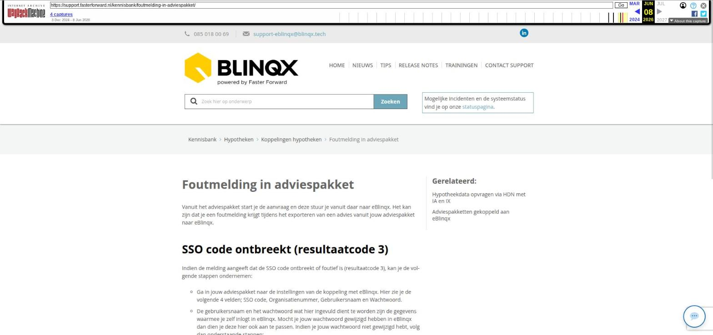

Foutmelding in adviespakket

Tekstinhoud
Foutmelding in adviespakket
Vanuit het adviespakket start je de aanvraag en deze stuur je vanuit daar naar eBlinqx. Het kan zijn dat je een foutmelding krijgt tijdens het exporteren van een advies vanuit jouw adviespakket naar eBlinqx.
SSO code ontbreekt (resultaatcode 3)
Indien de melding aangeeft dat de SSO code ontbreekt of foutief is (resultaatcode 3), kan je de volgende stappen ondernemen:
Ga in jouw adviespakket naar de instellingen van de koppeling met eBlinqx. Hier zie je de volgende 4 velden; SSO code, Organisatienummer, Gebruikersnaam en Wachtwoord.
De gebruikersnaam en het wachtwoord wat hier ingevuld dient te worden zijn de gegevens waarmee je zelf inlogt in eBlinqx. Mocht je jouw wachtwoord gewijzigd hebben in eBlinqx dan dien je deze hier ook aan te passen. Indien je jouw wachtwoord niet gewijzigd hebt, volg dan onderstaande stappen:
Open naast het adviespakket jouw eBlinqxomgeving, ga naar beheer – organisatie en personen – zoek op de naam van jouw adviespakket (Let op Adviesbox = Intersoftware). Klik op de naam van de organisatie en ga naar het tabblad 'Inventarisatie'.
Hier zie je de SSO code en het aanstellingsnummer, het aanstellingsnummer is het organisatienummer. Controleer of deze overeenkomen met de gegevens in jouw adviespakket.
Let op: indien het adviespakket Figlo betreft dan moeten ook in eBlinqx de inloggegevens van Figlo correct te staan. Dit kan je controleren via het poppetje rechts bovenin – Mijn instellingen – Instellingen – Koppelingen – Figlo.
Andere foutmelding
Indien je een andere foutmelding krijgt raden wij aan contact op te nemen met uw adviespakket.
Laatste update: 15 oktober 2025
Was deze informatie nuttig?
Ja Nee